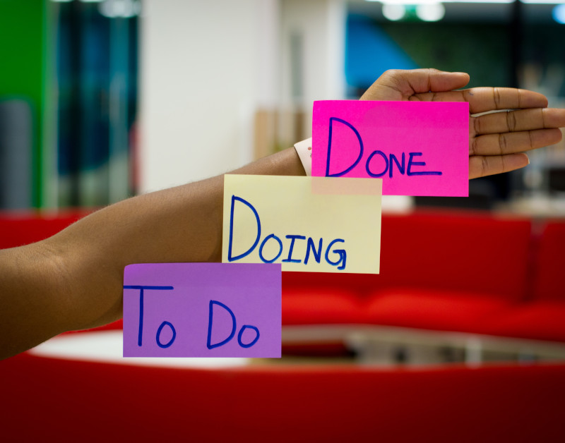

Kanban Board e gráficos de Gantt são ferramentas populares que revolucionaram as práticas de gerenciamento de projetos. Ambos oferecem vantagens exclusivas e atendem a propósitos diferentes no gerenciamento de projetos. Vamos explorar os gráficos Kanban e Gantt, suas características, benefícios e melhores casos de uso, ajudando você a escolher a ferramenta certa para suas necessidades de gerenciamento de projetos.

Image courtesy: Eden Constantino (Unsplash)
Kanban: visualizando o fluxo de trabalho e aprimorando a colaboração
O quadro Kanban é uma ferramenta gráfica que fornece uma imagem clara do fluxo de trabalho do projeto, permitindo que as equipes rastreiem tarefas, identifiquem gargalos e promovam a colaboração. Originou-se na indústria de manufatura, mas ganhou popularidade em vários domínios devido à sua simplicidade e flexibilidade.
Principais características e benefícios do Kanban
● Fluxo de trabalho visual
O quadro Kanban possui colunas que indicam várias fases do trabalho, como Pendências, Em andamento e Concluído. As tarefas são exibidas como cartões que se movem por essas colunas, fornecendo uma representação pictórica do fluxo de trabalho. Os recursos visuais ajudam as equipes a entender rapidamente o status do projeto e a manter a sincronia.
● Flexibilidade e adaptabilidade
Os quadros Kanban são facilmente personalizáveis para atender às necessidades específicas de um projeto ou equipe. O gerente de projeto pode adicionar, modificar ou remover colunas com base nos requisitos do fluxo de trabalho. Essa flexibilidade permite que as equipes se adaptem às mudanças de prioridades e otimizem seus processos de trabalho.
● Limites de trabalho em andamento (WIP)
O Kanban incentiva a limitação do número de tarefas em andamento a qualquer momento. Ao definir limites de WIP, as equipes podem evitar a sobrecarga e garantir a conclusão de um conjunto de tarefas antes de iniciar novas. Essa estratégia promove um melhor foco, reduz a multitarefa e melhora a produtividade geral.
● Melhoria continua
O Kanban enfatiza a melhoria contínua por meio de reuniões regulares da equipe e sessões retrospectivas. As equipes podem otimizar continuamente seu desempenho analisando o fluxo de trabalho, identificando gargalos e implementando aprimoramentos de processo.
Melhores casos de uso para Kanban
O Kanban é particularmente benéfico para projetos com requisitos dinâmicos, mudanças frequentes e desenvolvimento iterativo. É popular entre o desenvolvimento de software, projetos ágeis e setores orientados a serviços. A natureza visual do Kanban e sua ênfase na colaboração o tornam uma excelente escolha para equipes que exigem visibilidade em tempo real e rápida adaptação às demandas de projetos em evolução.
Gráficos de Gantt: planejamento estruturado e gerenciamento de cronograma
Os gráficos de Gantt são gráficos de barras que exibem as tarefas do projeto, suas durações e dependências. Desenvolvidos por Henry Gantt, esses gráficos fornecem uma abordagem estruturada para planejamento de projetos, programação e gerenciamento de cronograma.
Principais recursos e benefícios dos gráficos de Gantt
● Sequenciamento de Tarefas e Dependências
Os gráficos de Gantt permitem que os gerentes de projeto definam as dependências das tarefas, garantindo a execução das tarefas na ordem correta, permitindo que as equipes entendam o caminho crítico do projeto e identificando as tarefas que podem afetar o cronograma geral se atrasadas.
● Visualização da linha do tempo
A representação visual do cronograma do projeto em gráficos de Gantt permite que as partes interessadas visualizem as durações das tarefas, marcos e prazos do projeto, ajudando-os a definir expectativas realistas, gerenciar cronogramas do projeto e comunicar o progresso aos clientes e membros da equipe.
● Alocação de recursos
Os gráficos de Gantt fornecem uma visão abrangente das atribuições de tarefas e suas durações, facilitando a alocação de recursos. Os gerentes de projeto podem identificar com eficiência as restrições de recursos, evitar a superalocação e garantir uma carga de trabalho equilibrada entre os membros da equipe.
● Rastreamento de Progresso
Os gráficos de Gantt permitem o rastreamento do progresso da tarefa em relação ao cronograma planejado. A conclusão das tarefas atualiza as barras correspondentes, dando uma indicação visual do andamento geral do projeto, ajudando a monitorar os marcos do projeto, identificando atrasos e fazendo os ajustes necessários.
Melhores casos de uso para gráficos de Gantt
Os gráficos de Gantt são especialmente úteis para projetos com cronogramas complexos, dependências sequenciais e prazos fixos. Os gráficos são amplamente empregados onde a programação e a coordenação precisas são críticas, como em projetos de construção, engenharia e infraestrutura. Os gráficos de Gantt também são valiosos para projetos com várias tarefas e vários recursos que os gerentes de projeto devem gerenciar com eficiência.
Escolhendo a Ferramenta Certa
O quadro Kanban e os gráficos de Gantt têm pontos fortes e benefícios exclusivos, atendendo a diferentes necessidades de gerenciamento de projetos. O Kanban se destaca na visualização de fluxos de trabalho, aprimorando a colaboração e adaptando-se às mudanças nos requisitos do projeto. Por outro lado, os gráficos de Gantt fornecem uma abordagem estruturada para planejamento, programação e gerenciamento de cronograma.
Ao selecionar entre o quadro Kanban e os gráficos de Gantt, o gerente de projeto precisa considerar a natureza do projeto, a dinâmica da equipe e as preferências de gerenciamento. Você pode até encontrar valor em usar ambas as ferramentas em combinação para alavancar suas respectivas vantagens e otimizar seus processos de gerenciamento de projetos.
Ao entender os recursos e os melhores casos de uso do quadro Kanban e dos gráficos de Gantt, você pode tomar uma decisão informada que se alinhe com as metas do seu projeto e maximize a produtividade da sua equipe. Assim, você pode adotar os recursos e a funcionalidade necessários para planejar, organizar e acompanhar projetos com eficiência, levando a resultados de projeto bem-sucedidos.
O quadro Kanban e os gráficos de Gantt são integrados à plataforma CatchUp. A organização não precisa de uma ferramenta ou assinatura separada para integrar essas ferramentas obrigatórias.